Valencia · Spain Software / UI / Robotics
Hola, soy Carla.
Desarrollo software y diseño experiencias digitales, combinando código, producto y creatividad para construir soluciones que funcionan de verdad.
Valencia · Spain Software / UI / Robotics
Desarrollo software y diseño experiencias digitales, combinando código, producto y creatividad para construir soluciones que funcionan de verdad.
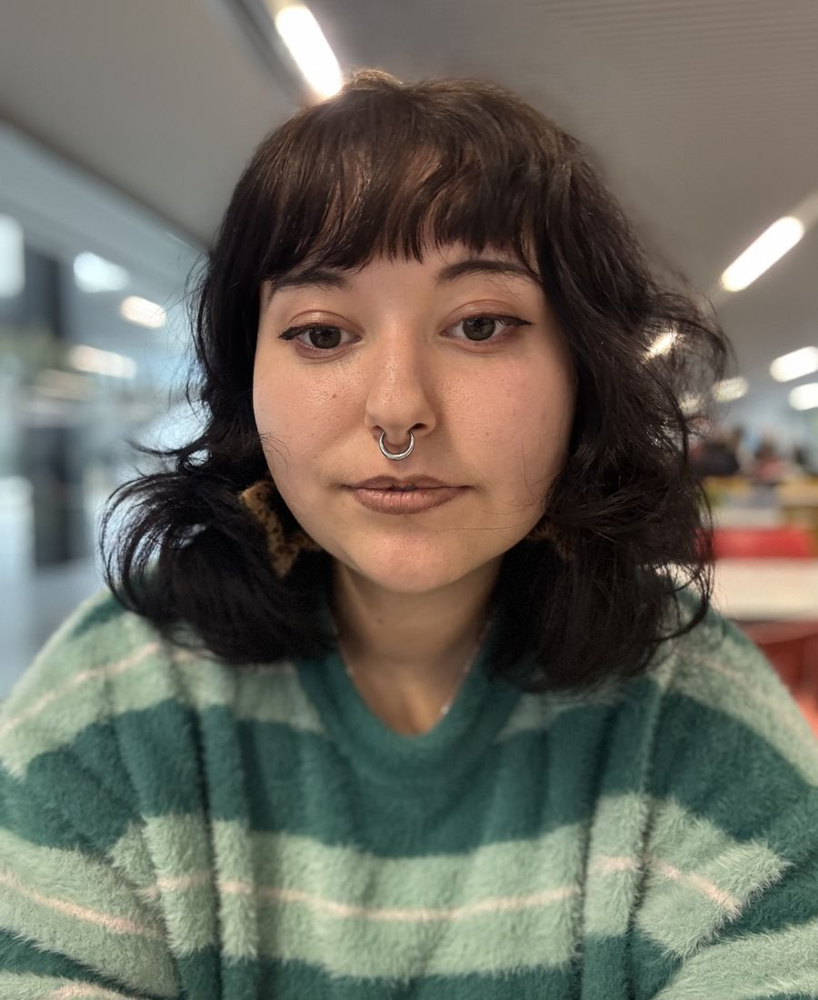
Disponible para nuevos proyectos
--:--
Hora en Valencia · hola
Mi stack, en bucle
Diseño y construyo productos con un propósito claro.
Estudiante de Ingeniería Multimedia y Técnica Superior en Desarrollo de Aplicaciones Multiplataforma, con formación en programación, diseño de producto y experiencia de usuario.
Además del desarrollo, colaboro como monitora voluntaria y participo en iniciativas STEM, donde el trabajo en equipo es tan importante como la tecnología.
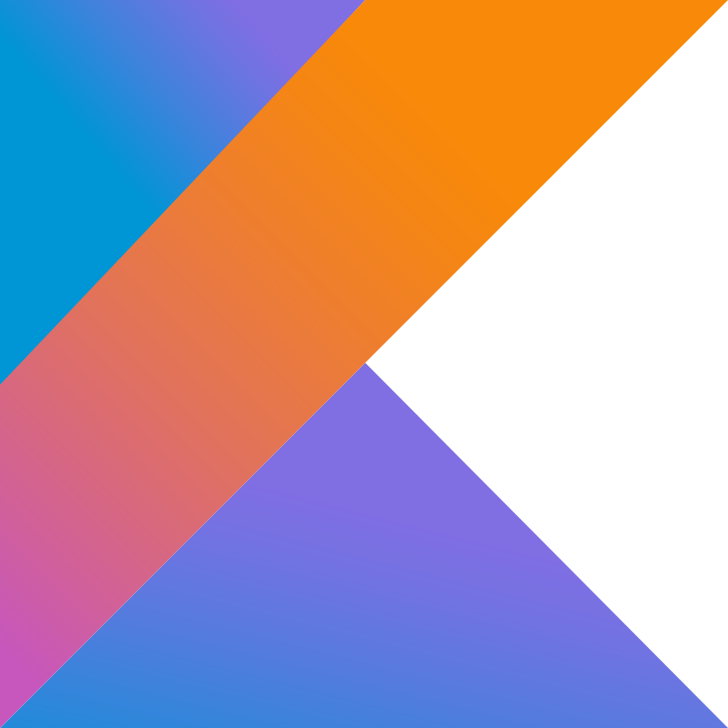
Kotlin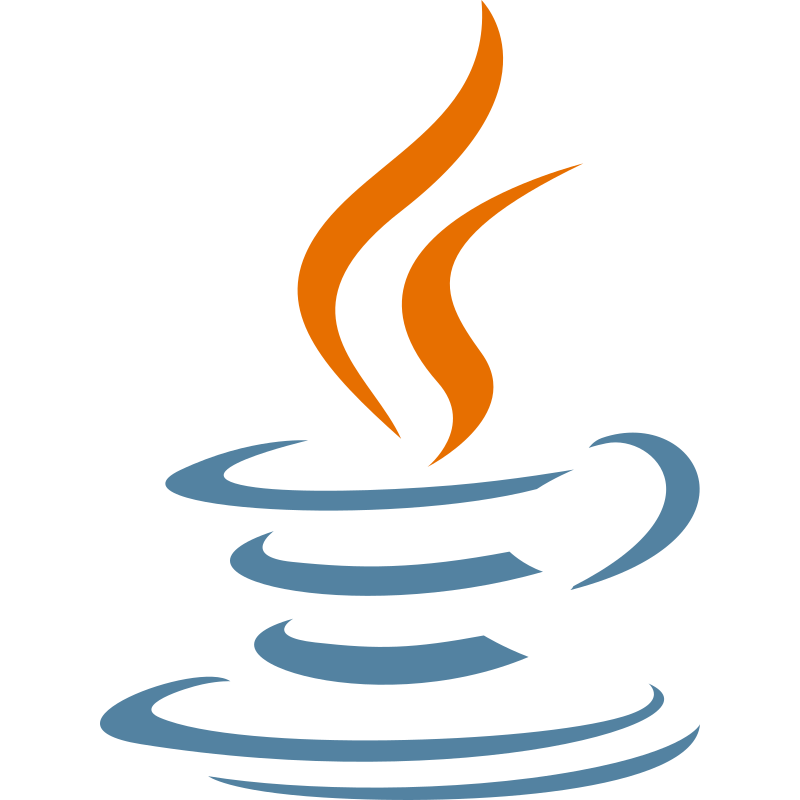
Java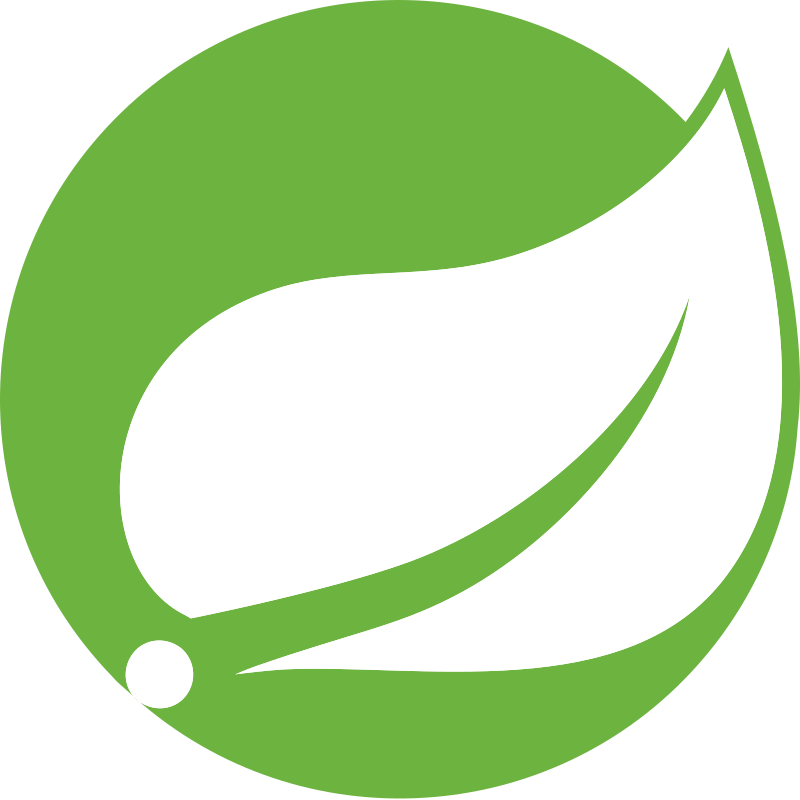
Spring Boot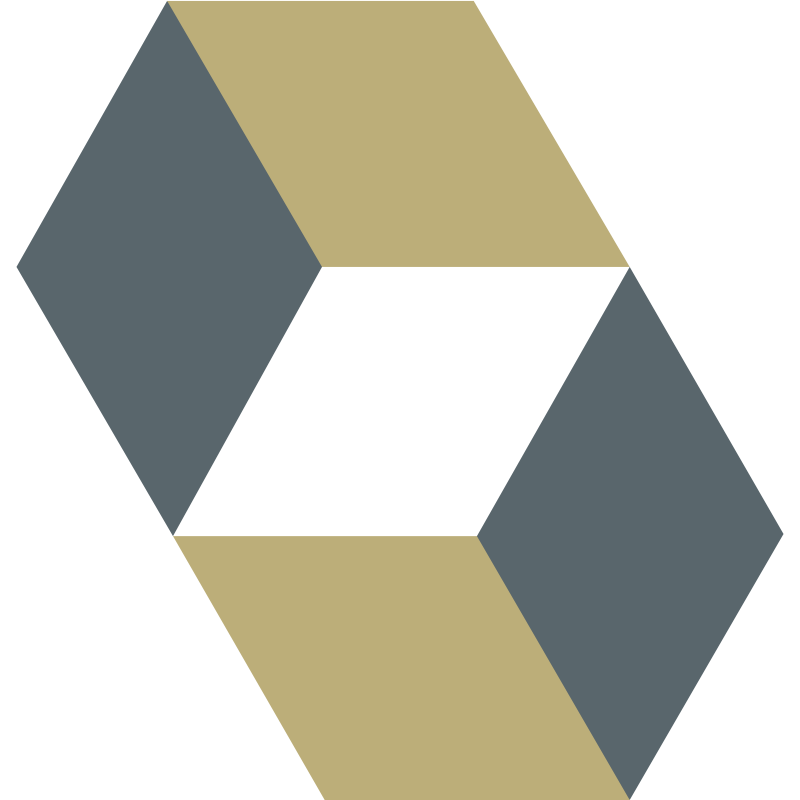
Hibernate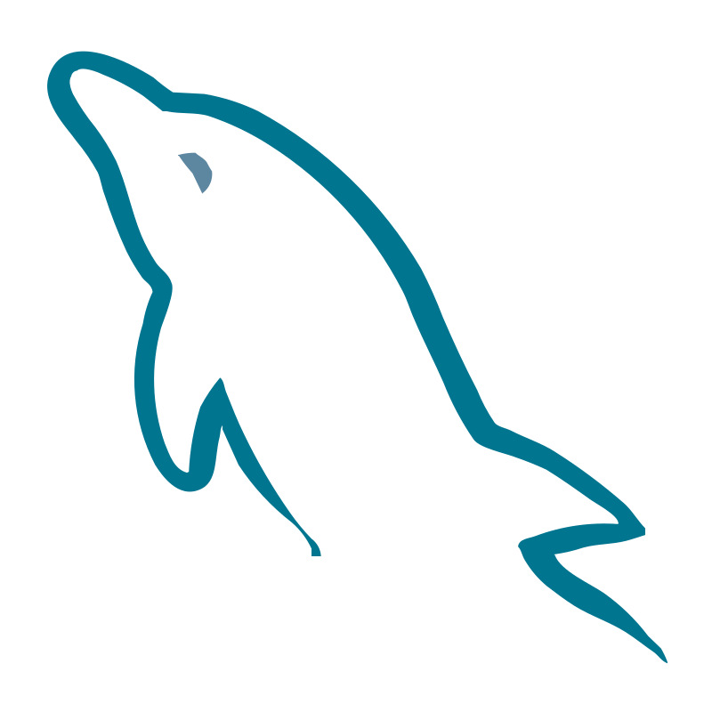
MySQL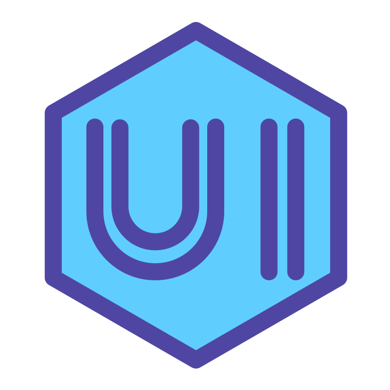
UI / UXSelección de proyectos académicos y personales en los que he trabajado desarrollo, producto, accesibilidad, robótica y diseño de interfaz.
AccesibilidadWeb
Aprender LSE de forma accesible, visual y gamificada.
Ver proyecto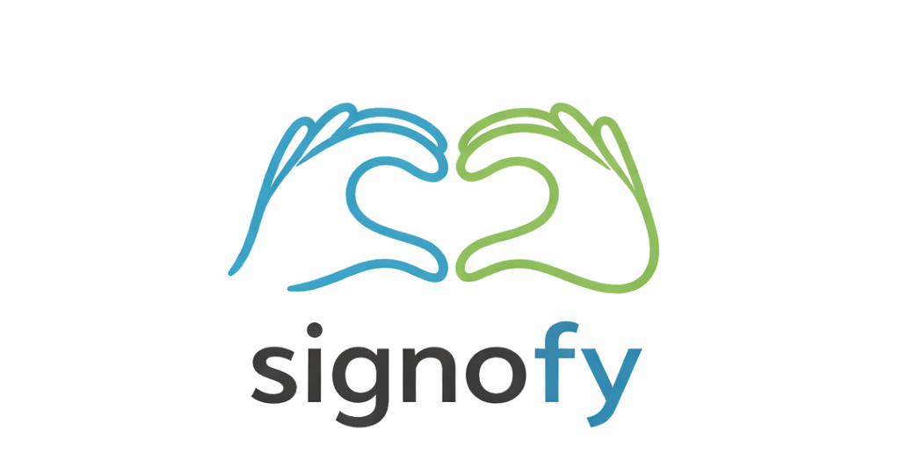
RobóticaC++
Un siguelíneas construido para competir y aprender.
Leer historia
Web app
Proyecto web publicado en GitHub.
Ver en GitHub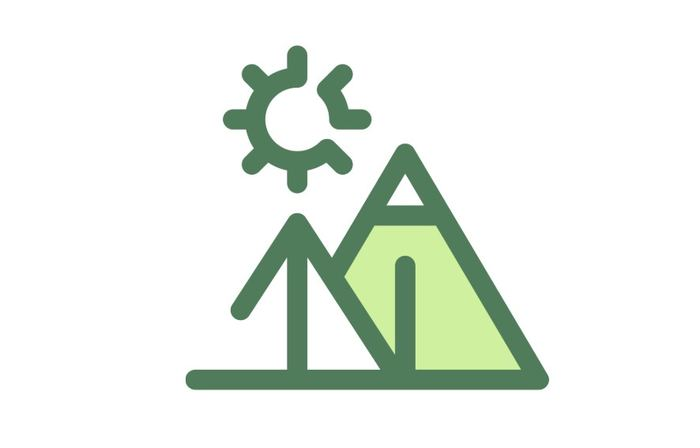
Fullstack
Aplicación fullstack para guardar y buscar entradas de viajes.
Ver en GitHub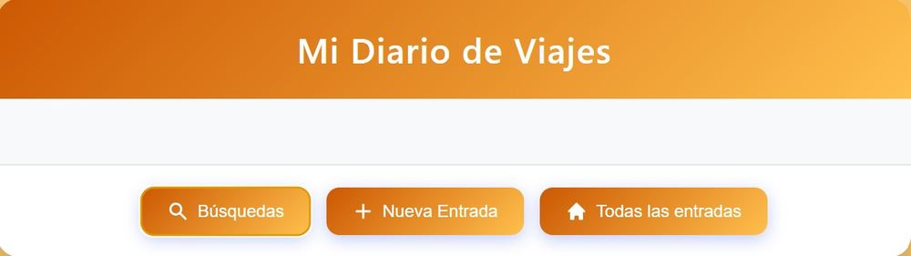
AndroidKotlin
Gestión digital de talleres mecánicos · API REST · Spring Boot · Electron.
Ver en GitHub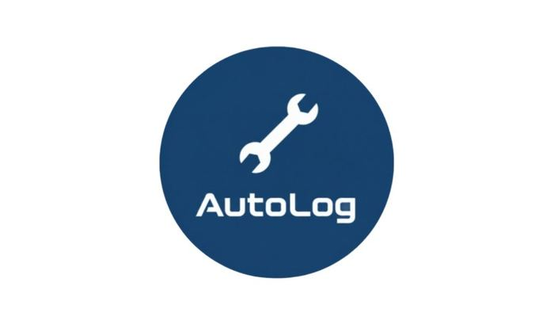
Un siguiente paso para seguir mezclando tecnología, creatividad y producto digital.
Desarrollo y programación de aplicaciones en entornos profesionales.
Diseño, programación y puesta a punto de un robot siguelíneas con Arduino y C++.
Premio NacionalAplicaciones multiplataforma, bases de datos, APIs, arquitectura y desarrollo web.
El punto de partida: sistemas, redes y la curiosidad que acabaría llevándome al desarrollo.
Colaboro como monitora voluntaria y participo en iniciativas de educación no formal como STEM Girls: experiencias que me recuerdan que la tecnología, al final, siempre trata de personas.
MonitoraSTEM GirlsTrabajo en equipoAprendizaje continuo

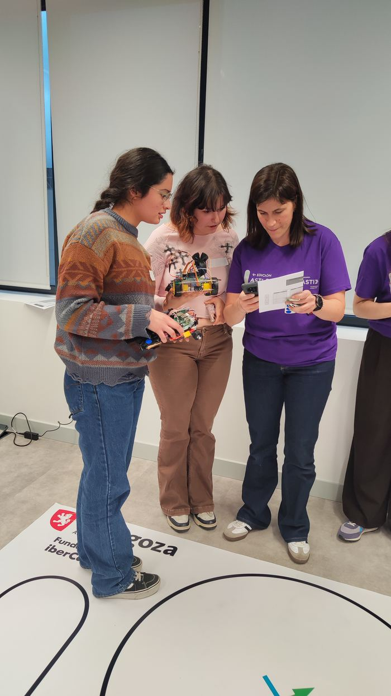
Estoy abierta a nuevas oportunidades, colaboraciones y proyectos donde pueda aportar valor y seguir creciendo profesionalmente.